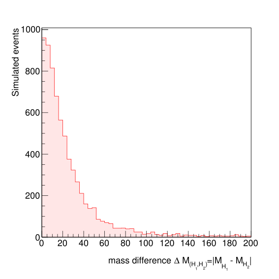
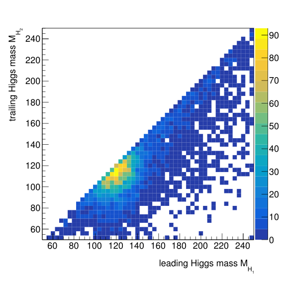

5.5 Event Selection
Given that the final state studied in this analysis is characterised by the presence of four highly energetic b quarks, the physics objects of relevance are reconstructed jets. The details of the reconstruction procedure at CMS were already discussed in Section 2.3.3. Advanced jet flavour tagging, in particular b-tagging, is also essential to distinguish jets that originate from b quarks from those originating from lighter quarks and gluons, and thus very useful to reduce the contribution from a large number of QCD multi-jet processes.
The subset of collected events that pass the trigger requirements, as well as all the simulated events, as listed at the beginning of Section 5.4 undergo a process of event reconstruction, producing a representation of the detector readout that attempts to recover the latent particle features at parton level, as discussed in Section 3.1.3.1. The first step of the offline event selection is to consider for each event the set of reconstructed particle-flow jets with \(p_T > 30\ \textrm{GeV}\) and \(\lvert \eta \rvert < 2.4\). An event is only selected if four or more jet passing those requirement are found.
After filtering out jets with lower energy or falling out of the tracker acceptance, at least four of the remaining jets are required to be b-tagged to consider the event in the final selection. The medium working point of the CMVA discriminator [85], defined as the value of the discriminator for which the expected mis-identification of light quarks and gluons is 1%, is used as b-tagging criteria. The object selection efficiency for jets originating from the b quarks produced in the decay of the Higgs boson pairs has been estimated from simulated samples to be around 65%. For the SM HH production process, the absolute and relative selection efficiencies of the trigger and offline selection, and the total number of expected events per \(\textrm{fb}^{-1}\), are included in Table 5.2, as estimated from the simulated events.
Table 5.2: Event selection efficiency and number of events expected per each integrated \(\textrm{fb}^{-1}\) of integrated luminosity for the Standard Model \(\textrm{pp}\rightarrow \textrm{HH} \rightarrow \textrm{b}\bar{\textrm{b}}\textrm{b}\bar{\textrm{b}}\) production process, as estimated using simulated events.

The goal of the previous selection is to reduce the contribution from QCD multi-jet processes and to isolate the set of signal events where all the jets from the Higgs pair decays can be fully reconstructed. After such selection, the most often occurring value for the number of jets in the selected subset of events is five. The four jets with highest CMVA discriminant are chosen as candidate decay products of the Higgs bosons. In order to reconstruct features of the Higgs boson candidates, a pairing between the selected jets has to be defined. The pairing used in this analysis is rather simple, the invariant masses for the two Higgs candidates \(M_{\textrm{H}_1}\) and \(M_{\textrm{H}_2}\) are computed for the three possible combinations of the four decay candidate jets, and the invariant mass difference \({\Delta M}_{(\textrm{H}_1,\textrm{H}_2)}\) is computed for each combination:
\[ {\Delta M}_{(\textrm{H}_1,\textrm{H}_2)} = \lvert M_{\textrm{H}_1} - M_{\textrm{H}_2} \rvert \qquad(5.4)\]
so the combination with the smallest mass difference is taken. Alternative decay candidates selection and pairing techniques were considered and tested. The fact that the chosen procedure does not explicitly use the mass of the Higgs boson makes it very effective to avoid conditioning also the distributions of the background processes. The aforementioned procedure correctly pairs the jets to form Higgs candidates in approximately 54% of the events. The distribution of \({\Delta M}_{(\textrm{H}_1,\textrm{H}_2)}\) and \(M_{\textrm{H}_1}\) versus \(M_{\textrm{H}_2}\) is shown in Figure 5.2. To distinguish between the two Higgs candidates during the rest of this chapter, the term leading Higgs \(\textrm{H}_1\) will be used for the reconstructed Higgs candidates with the largest invariant mass while trailing Higgs \(\textrm{H}_1\) for the other candidate.

Figure 5.2: Mass difference \({\Delta M}_{(\textrm{H}_1,\textrm{H}_2)}\) (left) and 2D histogram of \(M_{\textrm{H}_1}\) versus \(M_{\textrm{H}_2}\) (right) for simulated signal observations. Only the lower right part of the right plots includes observations because the Higgs candidates are ordered by mass.. a — mass difference \({\Delta M}_{(\textrm{H}_1,\textrm{H}_2)}\), b — \(M_{\textrm{H}_1}\) versus \(M_{\textrm{H}_2}\)
In this analysis, the final summary statistic considered for inference is based on the output of classifier that discriminates signal and background observations, which will approximate the likelihood ratio or a sufficient summary statistic if the signal and background components are fully specified, as discussed in Section 4.3.1. The machine learning classification technique used is based on gradient boosted decision trees (BDT), a technique that was summarised in Section 4.2.1. The implementation from the XGBOOST software library [123] was used to train a probabilistic classifier using a set of simulated events corresponding to SM Higgs pair production (i.e. 60% of the weighted pangea observations) and background artificial events resulting from the data-driven procedure which will be described in Section 5.6.
The set of features, or input variables, which are fed to the probabilistic classifier are listed in Table 5.3. The set of variables are divided in three subgroups, the first corresponding to variables related with the properties of the reconstructed Higgs pair HH system, which are compared for signal and background in Figure 5.3, including its invariant mass \(M_\textrm{HH}\), its total transverse momentum \(p_T^{\textrm{H}_1 \textrm{H}_2}\) and \(\cos \theta_{\textrm{H}_1 \textrm{H}_2 -\textrm{H}_1}^{\star}\), where \(\theta_{\textrm{H}_1 \textrm{H}_2 -\textrm{H}_1}^{\star}\) is the angle between the HH system and the leading Higgs boson candidate. Another feature that is found to increase the discrimination power of the classifier is the \(M_\textrm{X}\) variable, defined as: \[ M_\textrm{X} = M_\textrm{HH} - \left ( M_{\textrm{H}_1} - M_\textrm{H} \right ) - \left ( M_{\textrm{H}_2} - M_\textrm{H} \right ) \qquad(5.5)\] where \(M_\textrm{H}=125\ \textrm{GeV}\) is the Higgs boson mass. The second group of features includes variables associated individually with each Higgs boson candidate (see Figure 5.4 for a comparison of marginal distributions), such as the reconstructed mass of each paired di-jet system \(M_{\textrm{H}_1}\) and \(M_{\textrm{H}_2}\). The reconstructed Higgs candidate masses have the largest discrimination power, because their marginal distributions are expected to peak around \(M_\textrm{H}=125\ \textrm{GeV}\) for the subset of well-paired signal events while more spread for background events. Other features in this sub-group include the transverse momenta of the reconstructed Higgs candidates \(p_T^{\textrm{H}_1}\) and \(p_T^{\textrm{H}_2}\), the angular distances between their component jets \(\Delta R_{jj}^{\textrm{H}_1}\), \(\Delta R_{jj}^{\textrm{H}_2}\), \(\Delta \phi_{jj}^{\textrm{H}_1}\), \(\Delta \phi_{jj}^{\textrm{H}_2}\), and \(\cos \theta_{\textrm{H}_1 \textrm{H}_2 -\textrm{H}_1}^{\star}\), where \(\theta_{\textrm{H}_1 \textrm{H}_2 -\textrm{H}_1}^{\star}\) is the angle between the leading Higgs boson candidate and the leading jet. The last group includes variables directly associated to the reconstructed jets, including the transverse momenta \(p_{T_j}^{(i=1-4)}\) and pseudo-rapidity \(\eta^{(i=1-4)}\) of the first four jets, ordered by their value of the CMVA b-tagging discriminant as well as the scalar sum of their transverse momenta \(H_T\). Finally, the scalar \(p_T\) sum of all the jets that were not used for the reconstruction of the Higgs pair system \(H_T^{\textrm{rest}}\) and the b-tagging CMVA discriminant value for the third and fourth jet \(\textrm{CMVA}_3\), \(\textrm{CMVA}_4\) are also used. The marginal comparison of the distributions of signal and background for jet-based based variables is shown in Figure 5.5.
Figure 5.3: Comparison of the signal (SM HH production) and background (mixed data) distributions for the HH system features considered in the probabilistic classifier. See Table 5.3 and associated text for more details.
Table 5.3: List of reconstruction-based features used as input of the probabilistic classifier.
Figure 5.4: Comparison of the signal (SM HH production) and background (mixed data) distributions for the di-jet features considered in the probabilistic classifier. Di-jet candidates are ordered by their mass value. See Table 5.3 and associated text for more details.
Figure 5.5: Comparison of the signal (SM HH production) and background (mixed data) distributions for the jet-based features considered in the probabilistic classifier. Jet are ordered by CMVA value. See Table 5.3 and associated text for more details.
The trained classifier combines the 25 variables from Table 5.3 in a single scalar value, that approximates the conditional probability of belonging to the signal conditional on the input \(p(y = 1| \boldsymbol{x})\), which depends on the relative frequencies of signal and background events in the training dataset, as discussed in Section 4.1.1. For training, signal and background observations were weighted so as to represent the same prior probability and balance the classification problem. The hyper-parameters have been chosen based on a simple grid search, with the help of the scikit-learn software library [180], based on the area under the curve (AUC) of the resulting classifiers on a validation hold-out dataset.